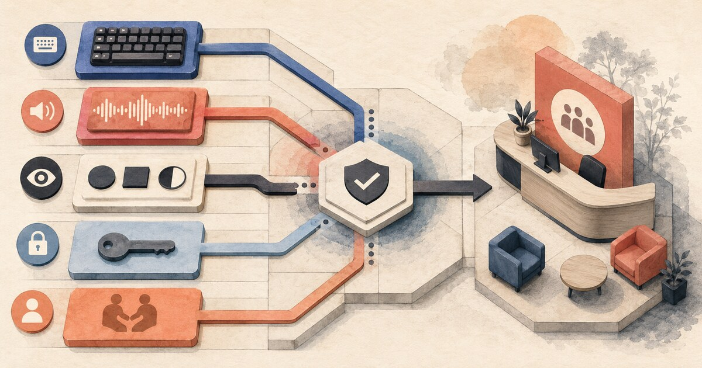

Seven Controls for AI in Credit Union Small-Business Lending
Define decision authority, trace the evidence, test reasons and outcomes, and design exceptions before scaling.
Read insight →
Practical explainers and playbooks for boards, executives, and frontline teams adopting AI with member trust in mind.
Define decision authority, trace the evidence, test reasons and outcomes, and design exceptions before scaling.
Read insight →
Test the complete member task across assistive technology, authentication, error recovery and human escalation.
Read insight →Define data return, model transition, evidence retention, service continuity and shutdown tests before the contract is signed.
Read insight →
Route disputes, hardship, legal protections, fraud, consequential decisions and weak evidence to qualified human review.
Read insight →
Review source accuracy, authority, fairness, privacy, accessibility, channel risk, escalation and evidence before release.
Read insight →
Baseline the workflow, count lifecycle cost, risk-adjust benefits and release funding only when evidence earns it.
Read insight →
Validate authority, source accuracy, fair lending, reason codes, valuations, exceptions and rollback before launch.
Read insight →Map tasks, set AI permission levels, train by role and measure the human handoff before scaling.
Read insight →
Where AI is already showing up in fraud, member service, lending, compliance, marketing, and internal operations.
Read insight →
AI is embedded in fraud tools, lending workflows, and employee systems. The gap is not adoption, but visibility and governance.
Read insight →
How CES trends point to AI becoming core infrastructure, decision support, and conversational by default.
Read insight →
Identify repetitive work, measure impact, and define handoffs where humans stay in control.
Read insight →